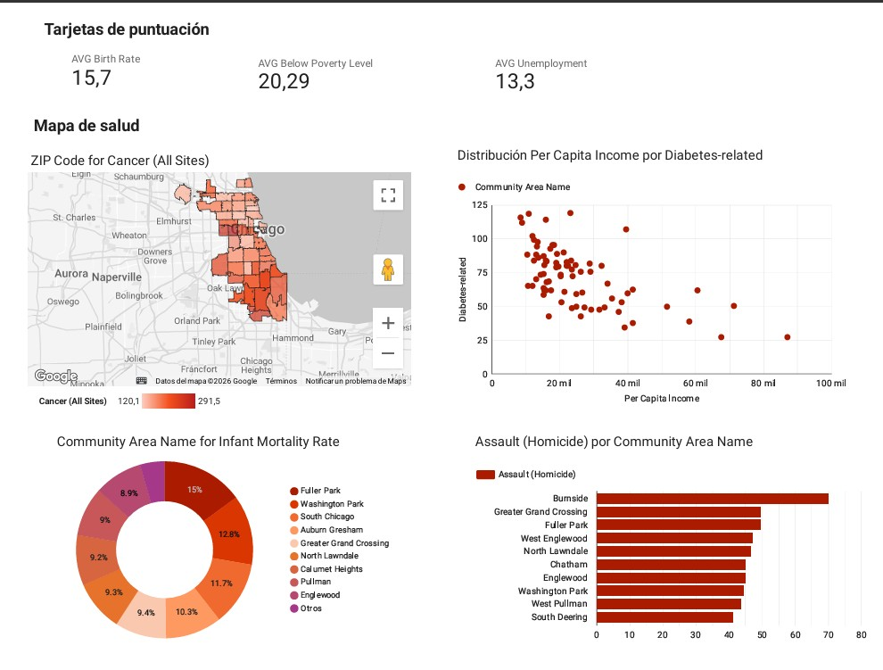

Dashboard de Inteligencia Territorial y Salud Pública
Looker Studio | Python (Pandas) | Google Maps API | Análisis Estadístico

Descripción del Proyecto
El acceso a la salud en grandes ciudades como Chicago está profundamente ligado al código postal. Sin embargo, los datos oficiales suelen estar dispersos en tablas de texto con formatos difíciles de procesar, lo que impide a los gestores de salud identificar rápidamente dónde se necesitan más recursos. Este ecosistema de BI visualiza la incidencia de enfermedades crónicas por barrio, permitiendo analizar de manera estadística y geoespacial el impacto de la pobreza, el desempleo y la violencia en la salud pública de 77 comunidades.
Responsabilidades y Acciones
Ingeniería de Datos y ETL
Procesamiento de indicadores de salud para 77 comunidades. Implementación de scripts en Python (Pandas) para la limpieza de formatos decimales inconsistentes y normalización de valores nulos o suprimidos.
Resolución de Ambigüedad Geográfica
Desarrollo de un sistema de geocodificación mediante el mapeo de Áreas Comunitarias a códigos postales (ZIP Codes), asegurando una precisión del 100% en la visualización de micro-regiones urbanas.
Modelado de Correlaciones
Creación de visualizaciones de dispersión para analizar de manera empírica la relación directa entre determinantes sociales (como el Ingreso Per Cápita) y resultados clínicos (como la Diabetes).
Logros e Insights Clave
-
Validación de Hipótesis Socioeconómicas
Se identificó una correlación negativa significativa entre el nivel de ingresos y la prevalencia de diabetes, lo que permite priorizar zonas específicas para intervenciones preventivas.
-
Mapeo de Carga de Enfermedad
La visualización geoespacial de la incidencia de Cáncer reveló disparidades críticas en la salud pública entre el North Side y el South Side de Chicago.
-
Análisis de Vulnerabilidad Infantil
Detección de hotspots de mortalidad infantil en comunidades específicas (ej. Fuller Park, alcanzando un 15%), facilitando la focalización urgente de recursos de salud materna.
Caso de Estudio: Análisis de Equidad en Salud Pública
-
1. El Problema (Contexto)
El acceso a la salud en grandes ciudades como Chicago está profundamente ligado al código postal. Sin embargo, los datos oficiales suelen estar dispersos en tablas de texto con formatos difíciles de procesar, lo que impide a los gestores de salud identificar rápidamente dónde se necesitan más recursos. El reto principal era transformar estos datos históricos complejos en una herramienta de decisión visual efectiva y rápida.
-
2. El Objetivo
Construir un ecosistema de BI que permita:
- Mapear la incidencia de enfermedades crónicas por barrio.
- Probar estadísticamente el impacto de la pobreza y el desempleo en la salud.
- Identificar las 10 comunidades con mayores índices de violencia y riesgo sanitario. -
3. La Solución (El Dashboard)
Se diseñó una interfaz interactiva estructurada en 4 pilares basada en los datos procesados:
- Capa Geográfica: Un mapa de calor por ZIP Code para visualizar la tasa de incidencia de Cáncer.
- Capa de Correlación: Un gráfico de dispersión cruzando Per Capita Income vs Diabetes-related.
- Capa de Equidad: Un gráfico de anillo ilustrando la distribución de la mortalidad infantil.
- Capa de Seguridad: Un ranking dinámico de asaltos y homicidios por comunidad. -
4. Resultados y Hallazgos Reales
Hallazgo 1 (Economía): La ciudad presenta un 20.29% de pobreza promedio, pero el dashboard revela que en las zonas de bajo ingreso, la diabetes se dispara drásticamente por encima de los 100 casos por cada 100k habitantes.
Hallazgo 2 (Violencia): Se identificó a la comunidad de Burnside como la zona con mayor tasa de asaltos (70), lo que abre la puerta a cruzar estos datos con el estrés ambiental y el impacto en la salud mental.
Hallazgo 3 (Salud Materna): El análisis evidenció que solo 10 comunidades concentran gran parte de la mortalidad infantil, siendo Fuller Park la más crítica de todas, sugiriendo una brecha grave y urgente en el cuidado prenatal de la ciudad.